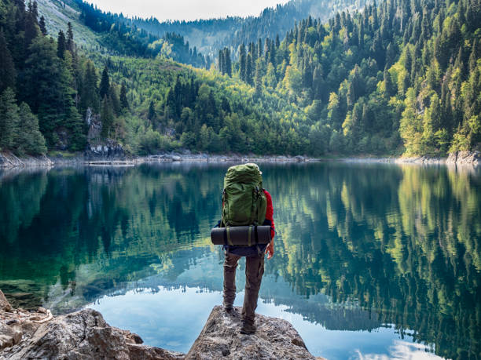

Türkiye'nin En Güzel Plajları
Türkiye, Akdeniz ve Ege kıyılarında birçok muhteşem plaja ev sahipliği yapmaktadır. İşte en popüler plajlardan bazıları:
- Ölüdeniz, Fethiye
- Kaputaş Plajı, Kaş
- İztuzu Plajı, Dalyan
Plajlar hakkında daha fazla bilgi için GoTurkey sitesini ziyaret edebilirsiniz.
Avrupa'nın En İyi Şehir Kaçamakları
Avrupa, tarih ve kültürle dolu birçok büyüleyici şehir sunmaktadır. İşte kısa bir tatil için önerilen bazı şehirler:
- Paris, Fransa
- Roma, İtalya
- Prag, Çek Cumhuriyeti
Avrupa şehirleri hakkında daha fazla bilgi için Lonely Planet'i ziyaret edebilirsiniz.
Doğa Tatili İçin En İyi Yerler
Doğayla iç içe huzurlu bir tatil arayanlar için birçok harika yer bulunmaktadır. İşte doğa tatili için önerilen bazı yerler:
- Kaz Dağları, Türkiye
- Alpler, İsviçre
- Yosemite Milli Parkı, ABD

Doğa tatili yerleri hakkında daha fazla bilgi için National Geographic Travel sayfasını ziyaret edebilirsiniz.